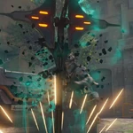
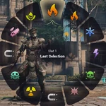
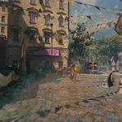
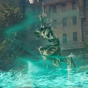

Every Character in Warframe has at least 1 passive and 4 abilites
Passive:Practiced Aim
Weakpoint kills increase Cyte-09's crit chance against weak points by 1% up to 300%.
Ability 1: Seek
Cyte 09 pulls out an scanner and puts it in the ground.All enemies caught in the scan take more weakpoint damage and are visible through walls! 
Ability 2: Resupply
Cyte-09 spawns ammo with an elemental affinity of his choosing ,giving his active weapon a full magazine and element bonus. Sniper rifles gain increase damage from this ability!

Ability 3: Evade
Cyte-09 turns invisible for a short duration. This duration is increased when Cyte-09 gets kills on weakpoints and heals him. 
Ability 4: Neutralize
Cyte-09's active weapon becomes the Neutrailzer, a Sniper Rifle, with the ability to ricochet shots on weakpoint hits.It can also fire a grenade that freezes enemies. 